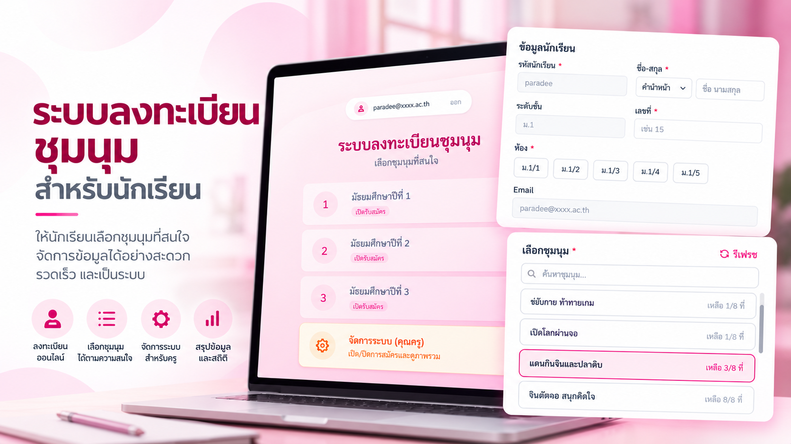

LIVE
โรงเรียนเอกชน จ.ตรัง · นักเรียน ~700 คน
ระบบเลือกชุมนุม
ปัญหา: นักเรียน ม.1–ม.3 ราว 700 คนต้องเลือกชุมนุมในเวลาเดียวกัน และแต่ละชุมนุมรับได้จำกัด
สิ่งที่ทำ: เปิดรับสมัครเหลื่อมเวลาตามระดับชั้น ตรวจโควตาด้วย Cache ป้องกันการจองซ้อนด้วย Lock ยืนยันตัวตนด้วยอีเมล Google Workspace และทดสอบโหลดก่อนเปิดใช้
BuildAutomateGoogle Apps Script